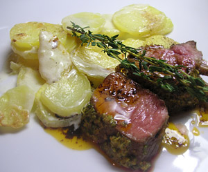

Lammracks an Thymianjus
5 von 6Das Lammrack mit einer Marinade aus Senf, Olivenöl, Knoblauch, Rosmarin, Thymian, Salz und Pfeffer marinieren. In einer Bratpfanne bei starker Hitze ca. 3 Minuten anbraten. Bei ca. 75 Grad 30-40 Minuten nachgaren. Währendessen den Bratenjus mit etwas Portwein ablöschen. Viel Thymian und Kalbsfond beiben und einkochen. Kalte Butter darunter ziehen und abschmecken.
